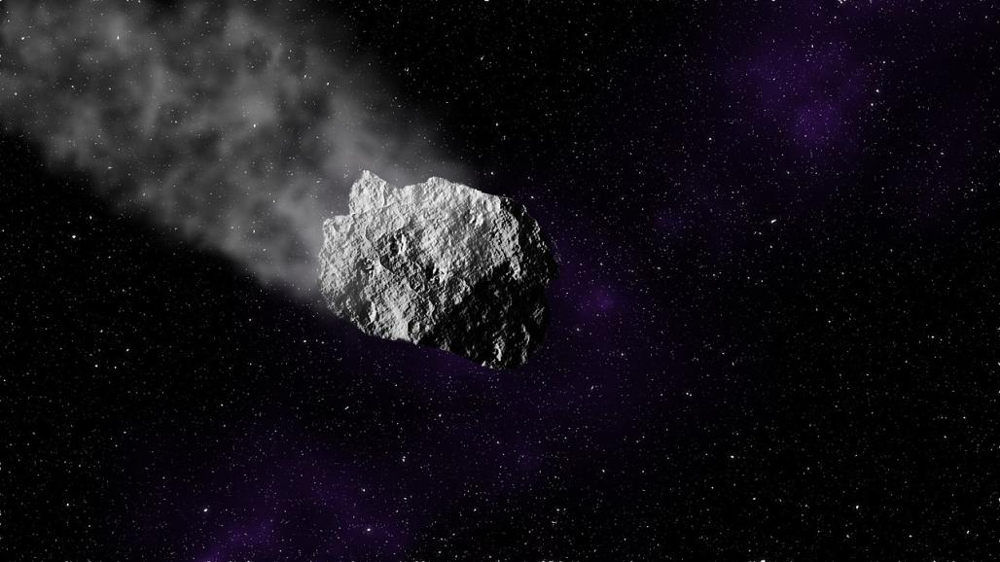

Asteroid Passes Earth as One of the Closest Ever Recorded
On April 28, an asteroid passed by Earth that was reported to have a 10% chance to hit Earth. It was given the official name 2020 HS7. It is estimated to be between 13 and 24 feet in length. While the asteroid would have burned up in the Earth atmosphere, it posed a threat to the many satelites that surround Earth. The distance from the Earth was about 23,000 miles but it only missed the nearest satelite by 746 miles. This was recorded as one of the colsest flybys ever recorded.
The asteroid was only spotted on April 27 by NASA's Panoramic Survey Telescope and Rapid Response System in Hawaii. However, it was known that it would safely pass by Earth without any problems. This asteroid is the 36th known asteroid to pass by Earth within one lunar distance or about 238,900 miles this year.
To find out more about the 2020 HS7 asteroid, visit NASA's official website for more details.